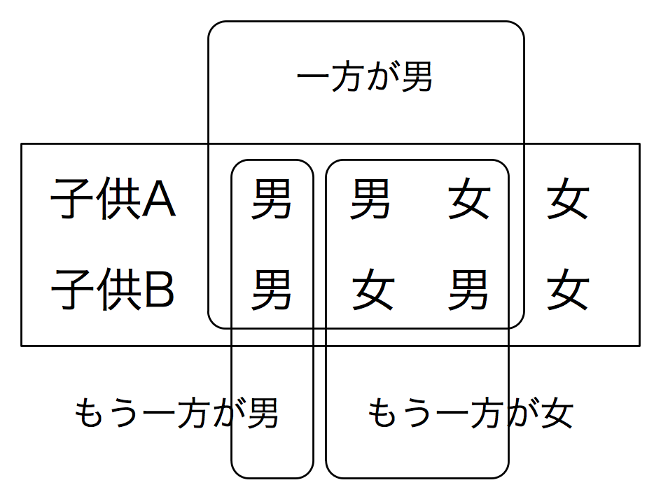
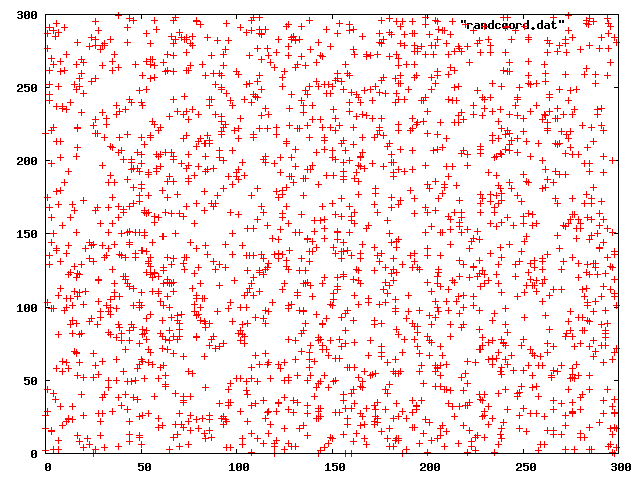
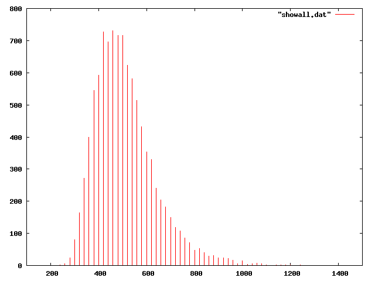
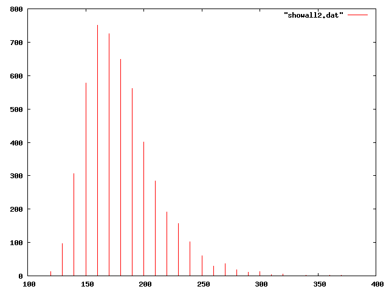

「プレイヤーの前に3つのドアがあって、1つのドアの後ろには景品の新車が、 2つのドアの後ろにはヤギ(はずれを意味する)がいる。プレイヤーは新車のドア を当てると新車がもらえる。プレイヤーが1つのドアを選択した後、モンティが 残りのドアのうちヤギがいるドアを開けてヤギを見せる。
ここでプレイヤーは最初に選んだドアを、残っている開けられていないドアに 変更しても良いと言われる。プレイヤーはドアを変更すべきだろうか？」

誕生日が一致する二人がいるという確率の計算は比較的簡単です。 N人の人間の誕生日がすべて異なる確率を計算し、 これを1から引けばいいわけですが、 全員を並べたとき 1番目人と2番目の人の誕生日が異なる確率は364/365であり、 3番目の人の誕生日がまた異なる確率は363/365であり... ということになるので、 N人の誕生日がすべて異なる確率は
p = 1 * 364/365 * 363/365 * ... (365+1-N)/365という式で計算できることになります。
これは以下のようなプログラムで計算することができます。
n = (ARGV.shift || 50).to_i
p = 1.0
n.times { |i|
p *= (365.0 - i) / 365.0
}
puts 1.0 - p
実行結果は以下のようになります。
% ruby tanjoubi0.rb 50 0.97037357 %計算は簡単でしたが、この結果は正しいのでしょうか。 条件が間違っていたり式が間違っていたりすると 全く異なる結果になってしまいます。
n = (ARGV.shift || 50).to_i # 人間の数
trials = (ARGV.shift || 10000).to_i # 試行回数
match = 0 # 同じ誕生日の人がいた回数
trials.times {
birthday = {}
n.times { |i|
day = rand(365)
if birthday[day] then # 誕生日の衝突発見
puts "#{birthday[day]}番目と#{i}番目が一致"
match += 1
break
end
birthday[day] = i
}
}
puts match.to_f / trials.to_f
実行結果は以下のようになります。
% ruby tanjoubi.rb 50 0番目と20番目が一致 2番目と22番目が一致 9... 15番目と23番目が一致 5番目と26番目が一致 0.9728 %シミュレーションなので毎回結果は異なりますが、 何回計算しても同じような値が得られるので、 計算が正しかったことをほぼ確信することができるでしょう。
「ふたりの子供の一方が男の子の場合、もう一方も男の子である確率は」 という問題は間違えやすい問題として有名です。 この確率は1/2だと考えてしまいがちですが、正解は1/3です。 ふたりの子供をA, Bとするとき、 A, Bが男の子か女の子かという場合分けは上の図のようになりますが、 一方が男の子である3種類のケースのうち 2種類のケースにおいてもう一方は女の子になるので、 この問題の答は1/3だということになります。
この問題の場合も、実際に計算してみることによって答を確信することが できます。
trials = (ARGV.shift || 10000).to_i # 試行回数
boys = 0; girls = 0
BOY = 0; GIRL = 1
trials.times {
# ふたりの子供の性別をランダムにセット
gender = []
gender[0] = rand(2)
gender[1] = rand(2)
# 一方が男の子だった場合だけ計算
if gender[0] == BOY || gender[1] == BOY then
# 男の子のどちらかを選択してind1に格納
if gender[0] == BOY && gender[1] == BOY
ind1 = rand(2)
elsif gender[0] == BOY
ind1 = 0
elsif gender[1] == BOY
ind1 = 1
end
# もう一方をind2に格納
ind2 = (ind1 == 0 ? 1 : 0)
boys += 1 if gender[ind2] == BOY
girls += 1 if gender[ind2] == GIRL
end
}
puts "BOY: #{boys}"
puts "GIRL: #{girls}"
puts "Ratio: #{boys.to_f/(boys+girls)}"
実際に男の子/女の子をランダムに計算し、
どちらかが男の子だったときにもう一方の性別を調べます。
ふたりとも男の子だったとき、
どちらを選んだ場合でももう一方が男の子であることは確かなのですが、
問題の条件に忠実に従うように、
ランダムに一方を選んでからもう一方の性別を調べるようにしています。
% ruby danshi.rb BOY: 2487 GIRL: 5023 Ratio: 0.33115845539281 %
trials = (ARGV.shift || 100000).to_i # 試行回数
boys = 0; girls = 0
BOY = 0; GIRL = 1
trials.times {
# 子供の性別をランダムにセット
gender = []
gender[0] = rand(2)
gender[1] = rand(2)
weekday = []
weekday[0] = rand(7)
weekday[1] = rand(7)
# 一方が男の子で火曜日生まれだった場合だけ計算
if (gender[0] == BOY && weekday[0] == 2) ||
(gender[1] == BOY && weekday[1] == 2) then
# 男の子のどちらかを選択してind1に格納
if (gender[0] == BOY && weekday[0] == 2) &&
(gender[1] == BOY && weekday[1] == 2) then
ind1 = rand(2)
elsif gender[0] == BOY && weekday[0] == 2 then
ind1 = 0
elsif gender[1] == BOY && weekday[1] == 2 then
ind1 = 1
end
# もう一方をind2に格納
ind2 = (ind1 == 0 ? 1 : 0)
boys += 1 if gender[ind2] == BOY
girls += 1 if gender[ind2] == GIRL
end
}
puts "BOY: #{boys}"
puts "GIRL: #{girls}"
puts "Ratio: #{boys.to_f/(boys+girls)}"
% ruby kayou.rb BOY: 6619 GIRL: 7233 Ratio: 0.477837135431707 %
(Wikipediaより引用)この問題は非常に勘違いしやすいものであり、 有名な数学者でも間違えたという逸話が残っています。 こういう問題を間違えずに解くためには、 理屈を考えるだけでは不充分で、 乱数を使ったシミュレーションで確認するのが確実だと思われます。
「プレイヤーの前に3つのドアがあって、1つのドアの後ろには景品の新車が、 2つのドアの後ろにはヤギ(はずれを意味する)がいる。プレイヤーは新車のドア を当てると新車がもらえる。プレイヤーが1つのドアを選択した後、モンティが 残りのドアのうちヤギがいるドアを開けてヤギを見せる。
ここでプレイヤーは最初に選んだドアを、残っている開けられていないドアに 変更しても良いと言われる。プレイヤーはドアを変更すべきだろうか？」
この問題を忠実に再現するプログラムを書くと以下のようになります。
trials = (ARGV.shift || 100000).to_i # 試行回数
fail = 0 # 当たりを引いた回数
success = 0 # ハズレを引いた回数
trials.times {
# 0,1,2の3つのドアから当たりドアをランダムに決める
# プレイヤーは0番のドアを貰う
hit = []
hit[rand(3)] = true
# モンティ・ホールの操作
# ランダムにドア1, 2を開けて、ハズレが出るまで繰り返す
while true do
opendoor = rand(2) + 1 # ランダムに1か2を選択
break if ! hit[opendoor]
end
print "モンティは#{opendoor}番のドアを開けました。"
if hit[0] then #
success += 1; puts "当たりです!"
else
fail += 1; puts "ハズレです!"
end
}
puts "Success: #{success}"
puts "Fail: #{fail}"
puts "Ratio: #{success.to_f/trials}"
これを実行すると、
選択を変更しない場合は当たりをひく確率がおよそ1/3である
(選択を変更すれば当たりをひく確率が2/3になる)
ことが明らかになります。
% ruby monty.rb モンティは2番のドアを開けました。ハズレです! モンティは2番のドアを開けました。ハズレです! モンティは2番のドアを開けました。ハズレです! モンティは1番のドアを開けました。当たりです! モンティは1番のドアを開けました。ハズレです! .... モンティは1番のドアを開けました。ハズレです! モンティは1番のドアを開けました。当たりです! Success: 3354 Fail: 6646 Ratio: 0.3354 %プログラムを見ると、モンティの行為はプレイヤーの当たりハズレに 何の効果も与えていないことが明白なので、 モンティが何をしても 当たりの確率が1/3のまま変化しないことも明らかですが、 頭の中だけで考えると確率が1/2になったように勘違いしてしまうことが多いようです。
確率の計算をするとき、少しでお根拠に疑問がある場合は 乱数を用いたシミュレーションによって確認することが有効でしょう。
3.1415926535897932384626以下のRubyプログラムを実行して200個の数字をランダムに出力すると、 たとえばその下のような数字列が得られます。 同じ数字が続いたり集中的に出現したりしている場所が多いことがわかります。
200.times {
print rand(10)
}
5537341995738855180096821833451569453844 5126548435984280087032949714244066204568 5246606854062184696468382628769542110440 7970935754806044804841637277410786609493 4157092911640557823043091823428633318910また、以下のようなプログラムでランダムに座標を生成してプロットすると 下図のようになりますが、 座標の分布には片寄りがあるように感じられてしまいます。
1000.times {
puts "#{rand(256)} #{rand(256)}"
}
10枚の写真をランダムにスライドショー表示しようとする場合、 現在の写真と同じ写真が次も表示される確率は1/10ですが、 同じ写真が続けて表示されることが多いと、 ランダム性が低いように感じられてしまいます。 ランダムに写真が表示されるように感じるためには、 同じような写真が続けて表示されないような工夫が必要です。 また、iPodのような音楽再生機器には「シャッフル再生」という機能がありますが、 本当の乱数を使ってシャッフル再生を行なうと 同じ曲が連続して再生されること多々あることになり、 選曲がランダムでないと感じられてしまうので、 そうならない工夫がされているようです。 本当にランダムな値は一様に分布することはなく、 片寄りが見られる場合も多いので、 人間にとってランダムに感じられるようにするためには 本当の乱数を利用するのではなく、 ランダムに感じられるような数字列を使うのが効果的です。
N枚のスライドをランダムに再生するとき、 すべてのスライドが表示されるにはかなり時間がかかるのが普通です。 何枚表示したときすべてのスライドが表示されるのかを調べてみると 以下のようになります。
n = (ARGV.shift || 100).to_i # スライドの数
trials = (ARGV.shift || 10000).to_i # 試行回数
histdiv = (ARGV.shift || 20).to_i # ヒストグラムの粒度
lim = (ARGV.shift || 2000).to_i # 表示上限
hist = [] # ヒストグラム
trials.times {
shown = []
nshown = 0
count = 0
while nshown < n do
ind = rand(n)
if !shown[ind] then
shown[ind] = true
nshown += 1
end
count += 1
end
hist[count/histdiv] = hist[count/histdiv].to_i + 1
}
100000.times { |i|
puts "#{i*histdiv} #{hist[i].to_i}"
break if i*histdiv >= lim
}
100枚の写真のスライドショーを行なう場合、 3-400枚ぐらいランダムに表示を行なわないとすべての写真が出ないのが 普通だということがわかります。
n = (ARGV.shift || 100).to_i # スライドの数
trials = (ARGV.shift || 10000).to_i # 試行回数
histdiv = (ARGV.shift || 10).to_i # ヒストグラムの粒度
lim = (ARGV.shift || 1000).to_i # 表示上限
hist = [] # ヒストグラム
$randhist = [] # ニセ乱数の過去値リスト
def rand2(n)
# 出やすさを決めてprob[]に格納
prob = []
$randhist.each { |val|
prob[val] = 1
}
# 特に最近出たものはハズす
recentlen = 3
recentlen = n-1 if recentlen >= n
(1..recentlen).each { |i|
break if $randhist[-i].nil?
prob[$randhist[-i]] = 0
}
# 出てないもの優先で割り当て
(0...n).each { |i|
if !prob[i] then
prob[i] = 10 # 2倍出やすい...だと生ぬるい
end
}
# prob[] にもとづいてニセ乱数を計算
a = []
(0...n).each { |i|
prob[i].times {
a.push(i)
}
}
v = a[rand(a.length)]
# ヒストリ保存
$randhist.shift if $randhist.length >= n
$randhist.push(v)
return v
end
trials.times {
shown = []
nshown = 0
count = 0
while nshown < n do
ind = rand2(n)
if !shown[ind] then
shown[ind] = true
nshown += 1
end
count += 1
end
hist[count/histdiv] = hist[count/histdiv].to_i + 1
}
100000.times { |i|
puts "#{i*histdiv} #{hist[i].to_i}"
break if i*histdiv >= lim
}
rand()のかわりにrand2()を使うと、以下のようなヒストグラムが得られます。
160回あたりにピークがあり、300回すればほぼ確実にすべてのスライドを
表示できることがわかります。
% ruby showall2.rb 100 5000 10 1000 > showall2.dat
% gnuplot -e 'set term png; set xrange [100:400]; plot "showall2.dat" with impulses' > showall2.png

(図) ヒストグラム
一方、前述のニセ乱数と同じような方法を使って 上下と同じ文字が出にくいようにすると、 以下のような問題になります。 上の絵よりもランダムさが大きいように見えるでしょう。